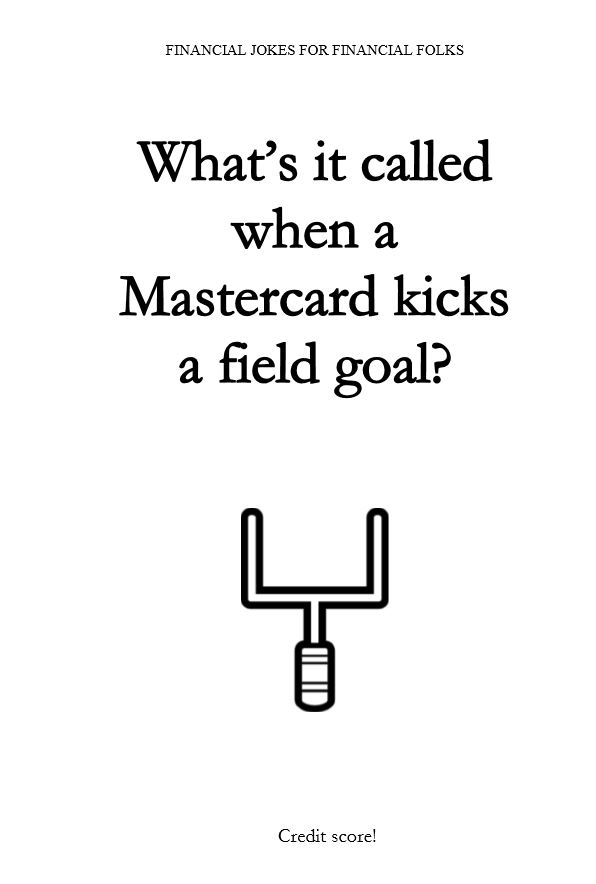

A common passive income strategy is to self-publish books, e-books, and audiobooks. In this article I’m going to show you how I went from having no idea how to write a book to self-publishing a joke book on Amazon and making over $1,000 in a single month.
I’ve always been a pretty weird guy. Nobody has ever walked up to me and said, “Wow, you seem like a really normal person.” One of my unique characteristics has always been my obsession with retiring early. There’s a million ways to get there, and at the rate I’m going, I’ll probably test most of them out. Some are bound to make you over $1,000 in one month!
One of my recent endeavors: Writing a book (Financial Jokes for Financial Folks).
No joke. This really did happen.

At a royalty rate of $2.04 for every copy sold, I made $1,151.56 from Financial Jokes for Financial Folks in December 2019
How I Came Up With The Idea of Self-Publishing a Book
It all started back in August 2019 when I began to build my website, Funny Man Finance. My goal was a pretty simple one: Create a funny website with accounting and finance jokes on it that would give me a platform to write about my various investing shenanigans (in hopes that people could learn from, or improve upon, my mistakes).
After I spent a few days building the bones of my website I needed some accounting jokes to add to one of my pages. I figured I could just borrow some off the internet. There must be dozens of websites with thousands of accounting jokes, right?
Wrong.
I was, as an accountant who loves making jokes, super surprised that I had trouble finding more than a couple dozen unique (and funny) jokes on the internet that had to do with accounting. Based on my findings I knew one of two things had to be true:
- There are no accounting jokes because there’s no demand for accounting jokes
- We’ve got ourselves a market for accounting jokes that needs to be filled
Being the guy that I am, and not wanting to believe that the world doesn’t need more jokes related to accounting and finance, I decided to take a day off of work, print off a sheet of 200 financial terms and definitions, and proceeded to use those terms as a guide, and write over 100 financial jokes.

Of those 100 jokes, I ended up keeping about 40 of them. After that I decided that a better way to write jokes would be to write one joke each day at work, on a large piece of paper, and display it on a stand for everybody walking by to see.
Based on the number of laughs I ended up getting, I’d either place it in the funny pile or in my shredder bin.
And I’m not saying that I’m great joke writer, but I’m pretty good at making people cringe after I tell them one of my jokes. And that was kind of the point all along. To make corny accounting and finance jokes.
Now that I had a laundry list of funny material at my disposal, I could finally create my accounting and finance jokes page on Funny Man Finance.
Around that same time, a co-worker of mine brought a joke book into the office that she had bought off Amazon. It was a dad joke book, and she would read some of the jokes during our team meetings and everybody loved it.
These jokes were in the same exact format as my jokes. A simple question followed-up by a punchline. The gears in my head started turning:
- Are there any accounting or finance joke books on Amazon right now?
- If there was a financial joke book on Amazon, would people actually buy it?
- Can anybody publish a book on Amazon?
- I wonder how much money I could make if I wrote my own joke book…
Turns out there was only one accounting or finance related joke book on Amazon, and it only had 1 review… and it was for 2 stars. There clearly wasn’t a lot of competition in this space and since I’m a firm believer that all accountants are hilarious, I decided to move forward with writing Financial Jokes for Financial Folks.
If you’re looking to get inspiration for a new book idea, you can jump down to the “THE THINGS I LEARNED ALONG THE WAY” section near the bottom of this post.
How I Published a Book on Amazon
I know what you’re thinking, “Stories are all well and fun, but how exactly do I make over $1,000 a month by self-publishing a book?” Let me take you through, and explain step-by-step, how to:
- Create a Kindle Direct Publishing Account
- Write a Manuscript
- Make a Cover
- Upload it to Amazon
Here we go!

Create a Kindle Direct Publishing Account
First things first, you need to create a Kindle Direct Publishing (KDP) account. This is the account where you’re going to upload all your documents that make up your book. KDP will then transform your documents into a format that allows Amazon to print your book on demand every time someone orders a copy.
Here’s what you’re going to do in order to create your KDP Account:
- Go to: https://kdp.amazon.com/en_US/ (Or the one for your respective country)
- Over to the right, you’ll see 2 buttons. One that says “Sign In” which is meant for people who already have an Amazon account and “Sign Up” for those who don’t. I assume most people will be choosing the “Sign Up” button here.
- After you click on that button, it will take you to a new screen where you should see a button that says, “Create your KDP account”. Go ahead and click that.
- From there you’re going to fill out a bunch of information and follow all the automatic prompts. It’s an intuitive experience so I won’t go into detail here.
Write a Manuscript
A manuscript is just the Word document where you type out your book. The manuscript represents the pages of your book. But it’s not as easy as just typing a bunch of text into Microsoft Word and then uploading it to KDP. You need to make sure it’s in the right format.
In order to do this, I recommend using one of KDP manuscript templates. Here’s a step-by-step guide: https://kdp.amazon.com/en_US/help/topic/G201834230
Pro tip: Make sure your template size matches how big you want your cover to be.
These templates are amazing because they take things into consideration that you would have never thought of. For example, did you know that the margin lengths are different on the left and right sides to compensate for the pages sinking into the binding of the book?
If you’re having trouble formatting your template into your idea, then send me a message through the Contact page and I’ll see if I can help you out! If I removed the Contact page it means I don't like you.
Make a Cover
When making a cover for your book, you have basically have 2 options:
- Create the cover yourself
- Amazon has a lot of great resources for this. Check out this page to learn more: https://kdp.amazon.com/en_US/help/topic/G201113520
- You can’t create your cover this way until you’ve uploaded your manuscript under your new Book Title in KDP.
- Pay an expert to do it for you
- This is the route I took. Luckily, I have a best friend who is a great graphic designer, so I had him create my two book covers for me (if you look closely, you’ll notice it’s the same guy on both covers). He charges $75/hour and a cover will normally take him 3-4 hours. Here’s his email if you’re interested: nugentpa@gmail.com
- There’s also a cheaper option: Fiverr. Freelancers on this site will charge as little as $45 to design your book cover.
Upload it to Amazon
Now that you have a finished manuscript and a book cover, it’s time to upload all the documents into KDP and start selling books!
To do this, you’re going to log into your KDP account. Your landing page should be your Bookshelf. This is where you’re going to start the process. All you need to do is click “+ Paperback” and then follow all the instructions.
This is where you’re going to write in your book’s title, description, author’s name, etc. as well as upload your manuscript and book cover documents. You’ll also be choosing your book’s price.
Your book’s price is very important because it determines how many royalties you get for every book purchase. You can learn more about how royalties are calculated here: https://kdp.amazon.com/en_US/help/topic/G201834330
There you have it! Your book is officially live on Amazon!
The Things I Learned Along The Way
Even though I’ve only published two books, I’ve learned quite a lot and would love to share some tips and tricks with you that will make your self-publishing journey a little easier.
The 1st Thing You Publish Doesn’t Have to Be Perfect
If you’re like I was then you’re probably under the impression that as soon as you publish your work that’s the end of it. It’s out in the world and there’s nothing you can do to change it.
If you left a typo, forgot to add a section, or realized you could have written something better, then you’re out of luck and will have to take it down and start over again.
Fortunately, that’s not the case.
Every time you publish a new book it’s considered your 1st Edition. That means you can make edits to your manuscript, re-upload it to Amazon, and it will update your 1st Edition into the 2nd Edition while maintaining the product profile including all of your reviews that you worked so hard to obtain.
Here are some things that you can change with each updated edition:
- Manuscript
- Book cover
- Price
- Your book’s description that shows up on the Amazon page
- The keywords used for searching for your book
- The categories your book shows up in
- The cover finish (either glossy or matte)
There are a few things you can’t change though, so be aware. These include:
- Book's title
- Book's subtitle
- Author name/li>
- ISBN
- Publication date
- Paper type and trim size
Since your manuscript can be updated whenever you want, I recommend that you publish as soon as possible, order a copy, and make edits after you can hold a product you created in your own hands. It feels really good.
There is a famous quote by Reid Hoffman, founder of LinkedIn, which I believe applies to self-publishing on Amazon:
“If you are not embarrassed by the first version of your product, you’ve launched too late.”
Write About Something You’re Passionate About
I know this sounds corny, but it’s true. The words are going to flow a lot easier if you’re writing about something that truly excites you.
It’s super nerdy, but I love accounting and finance and I love telling jokes. Believe it not, I was voted Class Comedian back in high school, and then went on to get my Master’s Degree in Finance. Who would have thought that I could blend those two topics together?
Regardless, Financial Jokes for Financial Folks basically wrote itself because I’m passionate about the contents inside it.
Now I’ve never tried to write a book about something I’m not interested in, but I can only imagine it would be like trying to ride a bike with square wheels up a hill made of lava.
Not All Books Are Novels
When you think about a book being published, what’s the first thing that comes to your mind? I’ll tell you what comes to my mind: A long novel that took two years to write. I’m here to tell you to throw out that thought, because a book can be so many more things than just a novel.
Take my joke books for example. Each page contains one joke split in half by a funny picture.
A book isn’t always a series of long paragraphs broken up into chapters that tell a story. A book is just a bunch of pages that take information/knowledge/humor from the author’s brain and transfers it to the reader’s brain.
There’s a million different ways you can accomplish this. Here are some out-of-the-box examples:
- Comics
- Cookbooks
- Workout Plans/li>
- Daily Quotes
- Journals
My fiancé bought a book several months ago that contains 365 questions that every couple about to married should ask themselves before their wedding day. Each page is literally one question. Now that’s creative! And to be honest the book is actually really helpful.
You Can Advertise Your Book on Amazon
I made over $1,000 in December 2019 after self-publishing Financial Jokes for Financial Folks. After that, sales started to dwindle down. It makes sense that most of the sales of a book that would normally be given as a gift would be higher during the holiday season.
I wanted to see if there was anything I could do to increase my sales again. That’s when I turned to advertising. Once you publish your book, you have the ability to move your listing to the top of the page when someone searches for your keywords via Amazon Advertising.
Most of the products you see while searching on Amazon that show up near the top of the page have thousands of people who have bought them and have left hundreds of 4 and 5 star reviews. But if you look closely, you’ll notice that some products have “Sponsored” above the product description:
What’s happening here is that people who are selling things on Amazon have taken the opportunity to pay additional money to have their listings show up higher when people search for specific keywords. The seller will only pay money if someone clicks on their product.
Advertising on Amazon is a quick and easy way to get people to see your work after you’ve self-published. Here’s some information if you’re interested: https://advertising.amazon.com/
I will warn you though. It’s very easy to over-bid on how much you’re willing to pay per click. If you end up bidding too much and choose keywords that aren’t completely relevant to your book then you can end up spending more money on advertising than you make from book sales.
There you have it. That’s my story about how I started writing financial jokes, published a book on Amazon, and some things I learned along the way. I hope this article gives you inspiration to go on your own self-publishing journey. If you do then please send me a link to your book and I’ll be sure to check it out!